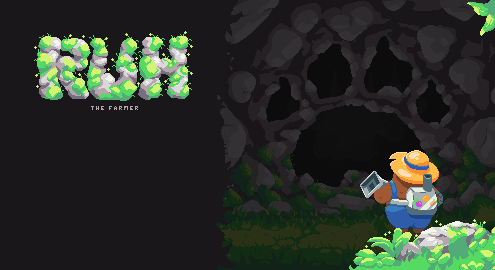
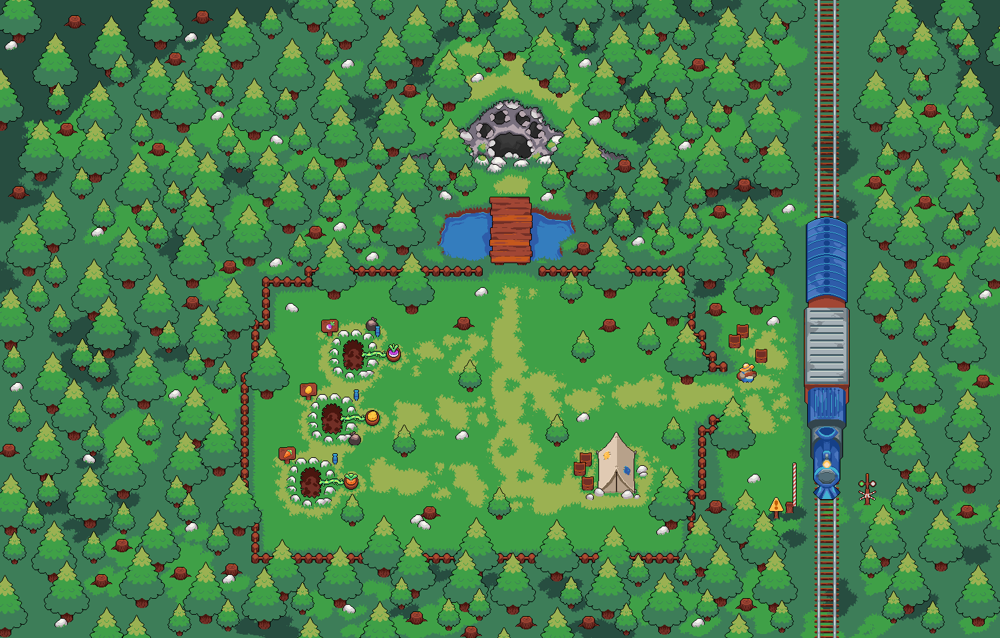
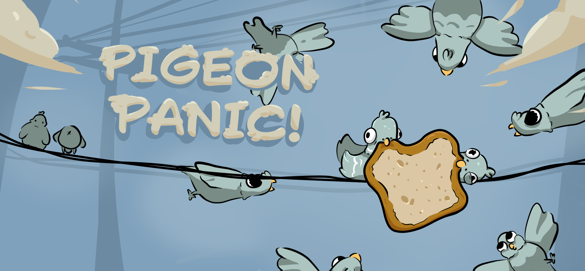
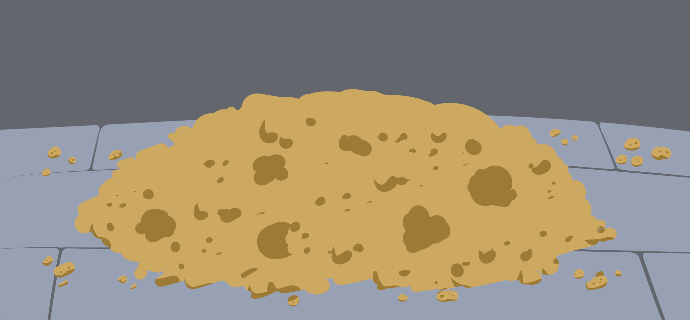
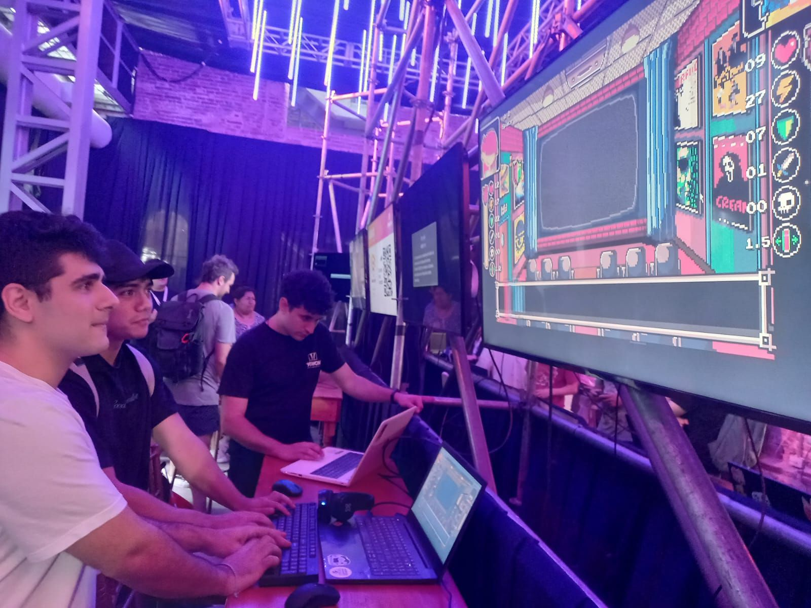
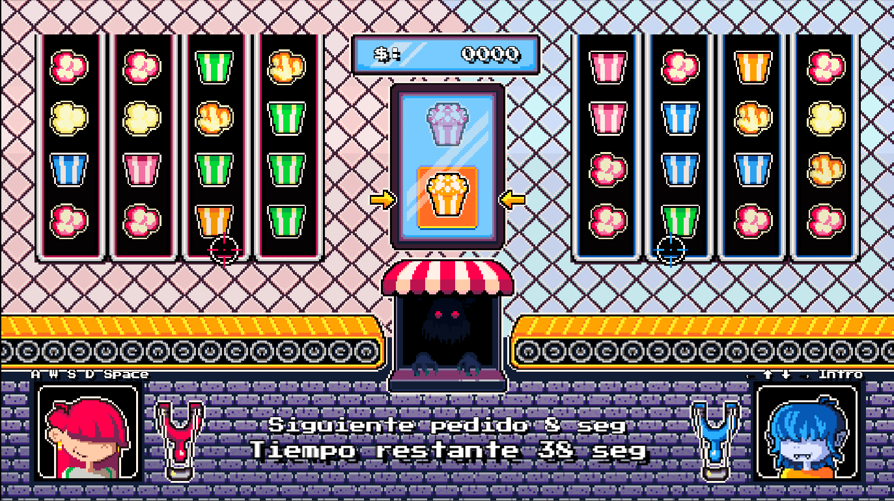
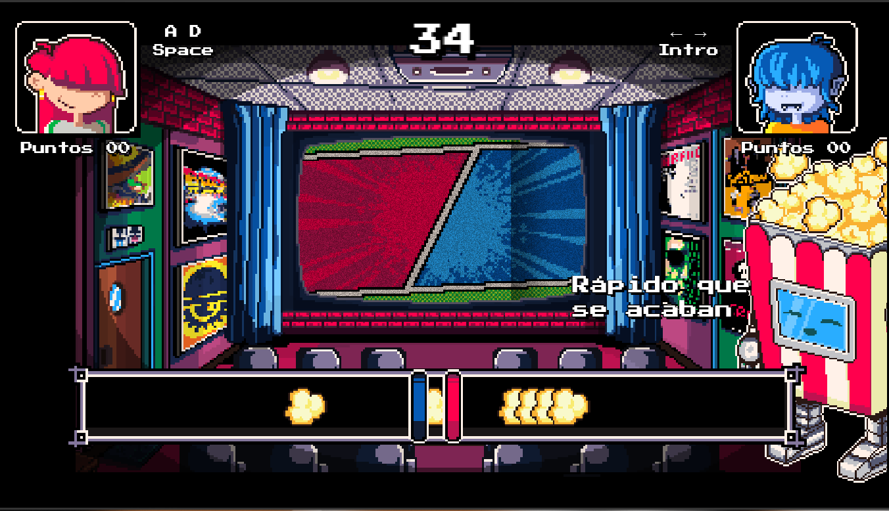

Prototipos Academicos
Desde 2022 he estado desarrollando de forma académica universitaria para formarme en el desarrollo de videojuegos. Realizando iteraciónes de mecánicas de juegos conocidos.
Así obtuve experiencia en C#, JavaScript, el framework Phaser, con los que he creado prototipos de juegos funcionales.
Proyecto académico "RUH"
2025 - productor, programador, diseñador.
Desarrollado junto con artista para probar mecánicas de juegos Top-Down. Es una propuesta de juego de exploración. Probamos añadir mecánicas de otros juegos como absorber y disparar del "Slime Rancher", la vista, movimiento y cambio de mapas como "Binding of Isaac", y una expriencia de juego como "Stardew Valley".
Al final y como cierre del año lo presentamos en el Cine Belgrano de Rafaela. Fué una grata experiencia y un desafío el alcanzar las fechas de desasrrollo para con el Trailer.
Galería del proyecto


Proyecto académico "PigeonPanic"
2025 - productor, programador, diseñador.
Desarrollado junto con artista para celulares, fué una propuesta para incursionar en los videojuegos hipercasuales y probar mecánicas de juego tactil. Es un hipercasual de Tap-Mole de sesiones cortas frenéticas. Inspirado en el odio a las palomas que ensucian la ciudad.
El desafío que nos enfrentamos fue la implementación de interfaces para celulares. La posición de los holes donde aparecían las palomas y la gestión de la información en pantalla para que no quede fuera del alcance del jugador, o que no sea visible.
Galería del proyecto


Proyecto académico "KidKorn"
2024 - productor, programador, diseñador.
Este proyecto fue desarrollado con el motor de Phaser manejando HTML/CSS y javascript con un equipo academico que desarrolló la música y el arte.
Desde el comienzo, en marzo de 2024, trabajamos en una propuesta creativa que uniera videojuegos con el mundo del cine, tomando referencias visuales y mecánicas inspiradas en películas y estilos clásicos en pixel art.
El desarrollo fue un gran desafío para nosotros, no solo en lo técnico, sino también por todo el esfuerzo de organización, creatividad y colaboración que implicó. Ver cómo nuestro juego tomaba forma fue una experiencia muy enriquecedora, tanto a nivel personal como profesional.
Tuvimos la oportunidad de presentarlo en Santa Fe, en una convocatoria regional de videojuegos. La recepción del público fue muy cálida y positiva, lo que nos llenó de motivación y orgullo. También participamos en charlas sobre desarrollo, donde compartimos nuestras ideas y escuchamos experiencias de otros creadores.
Galería del proyecto


